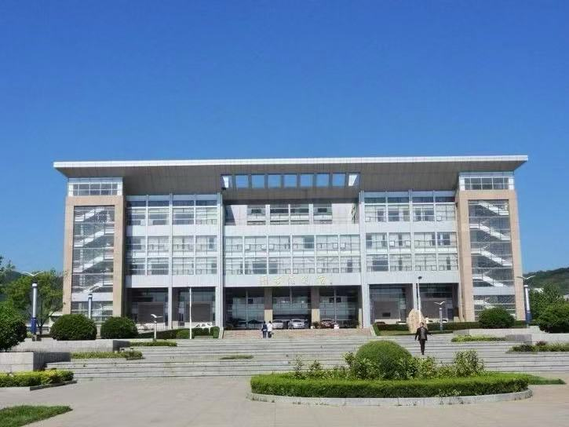
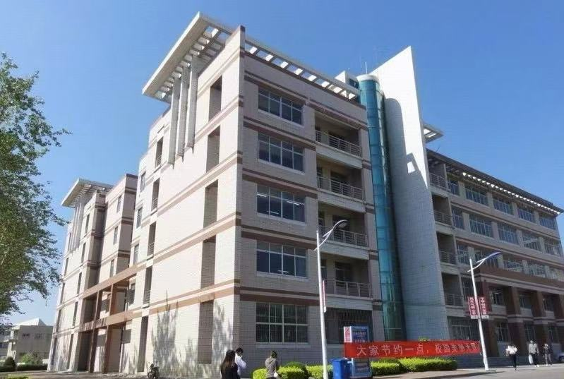
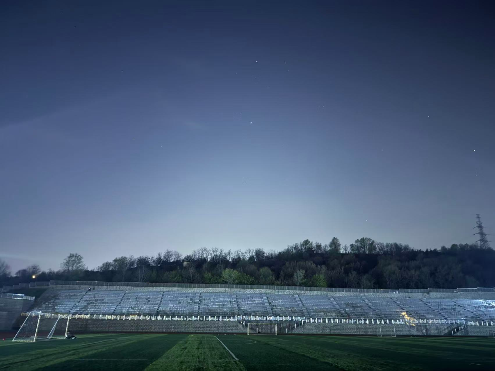

芝芜湾畔，黄金顶下，鲁东大学便枕于这片山海灵秀的沃土。
清晨，孔子山的薄雾裹着草木清香漫入校园，晨读声与鸟鸣交织成春日序曲；
傍晚，镜心湖的晚霞将拱桥与图书馆的剪影拉得悠长，晚风拂过湖面，泛起粼粼波光。
四季流转，春有樱园如雪，夏有绿柳成荫，秋来红枫似火，冬去白雪覆瓦。
樱花大道是春日最动人的景致，粉白花瓣缀满枝头，风过处落英缤纷，铺就一条浪漫花径，
师生们漫步其间，镜头定格下无数青春瞬间。镜心湖旁的垂柳依依，锦鲤在水中自在游弋，
岸边的石凳上常有学子捧书阅读，与湖光山色融为一体。这里不仅是知识的殿堂，更是一幅流动的油画，
每一步足迹，都踏在诗情画意的篇章里，每一缕清风，都裹挟着校园的温柔与生机。
从晨光熹微到暮色四合，鲁东大学的自然风光，始终滋养着每一位学子的心灵。
自1930年建校以来,鲁东大学以“厚德博学，日新笃行”为骨，涵养了近百载的书香文脉。
这里是“鲁大作家群”的摇篮，张炜、萧平等文坛巨匠从这里走出，笔墨传薪，润泽四方。
图书馆里墨香流转，超算中心的科技光芒熠熠生辉，传统与现代在此交融，
孕育出一代又一代兼具人文底蕴与科学精神的时代新人。逸夫教学楼里，课堂上思维碰撞的火花点亮求知之路；
田径运动场上，奔跑的身影挥洒着青春的汗水，呐喊声与欢呼声回荡在校园上空。
校史馆里，一张张老照片、一件件旧物件，诉说着学校近百年的风雨兼程与辉煌成就。
人文景观不仅是校园的物理空间，更是鲁大精神的载体，承载着一代代鲁大人的理想与追求，
见证着学校从胶东公学到鲁东大学的沧桑巨变，也守护着每一位学子的成长与蜕变。


